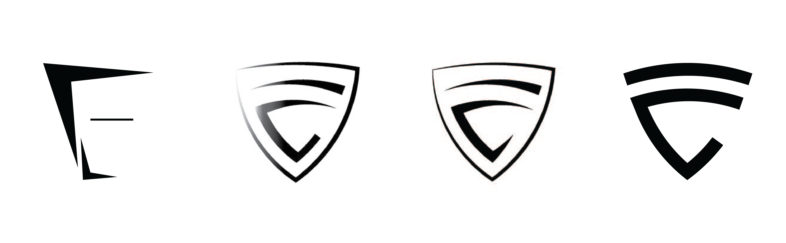
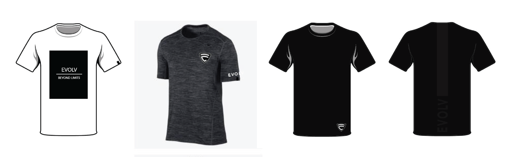
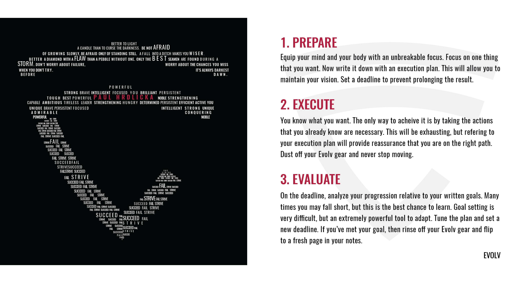
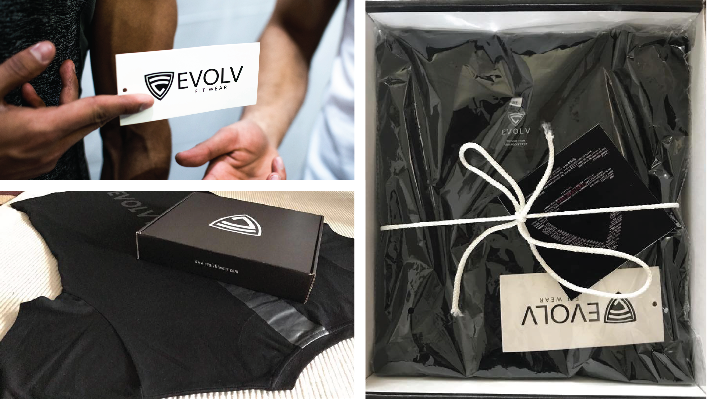

The Vision
The aim of this project is to convince individuals that failure is not a bad thing. We set to accomplish this by constructing a brand that is chracterized by power, strength, will, and more importantly that any other trait, the brand is characterised by failures. As a beginning step, we thought about Batman; a hero characterised with strengths that were build by his many downfalls. This type of literature seen in Batman can be looked at as a role model for Evolv.
Logo Design
Believe me, there were hundreds of sketches before I came up with these.

Product Design
Using blank t-shirt templates, we fombled with various tshirt designs on Photoshop. Eventually, we came up with something like this.

Personalized Touch
Since this brand focuses on a very deep level with the user, namely their personal performance and development, I felt that it was almost mandatory to make users feel significant. Every package holds a message personalized to the user.

Packaging Experience
My biggest focus was to make every part of this brand memorable, and I acheived this by making the little things stand out. The first impression of a product is made during the unpackaging of the product. We felt that it was important to get this part right, so we designed product packaging that stood out from other fitness clothing retailors.

Landing Page
The online store for Evolv Fit Wear. One of the challenges I had with creating the design for this page was that we started off with selling only three items. As a result, following a standard online store design with a separate products page wouldn't work for us. So, I made the landing page itself more dominant with the content, and now the user can browse all items with minimal navigation steps. Also, a cool way we presented our products was by making each of them a segment of a journey. One product represents the beginning of a journey, the failure. Another product represents the training phase, where work is put in to correct the failures. And last but not least, our third product symbolizes success and evolution. The designs also resemble these aspects.